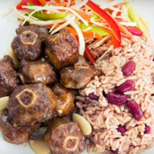
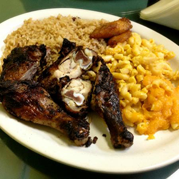
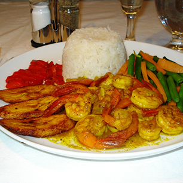
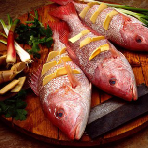
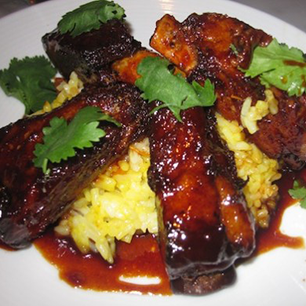

FEATURED RECIPES

OXTAIL
Ingredients
- 2 pounds beef oxtail
- 1 clove garlic, minced
- 1 onion, chopped
- 1 tablespoon salt
- 1 teaspoon pepper
- 1 tablespoon Greek seasoning
- 1 teaspoon seasoning salt
- 2 tablespoons bacon drippings or shortening
- 2 tablespoons all-purpose flour
- 2 cups broth from cooked oxtails
- 2 dashes browning sauce
- salt and pepper to taste
- garlic powder to taste
Directions
- Place oxtails, garlic, onions, 1 tablespoon salt, 1 teaspoon pepper, Greek seasoning, and seasoning salt in a large stock pot. Fill with enough water to cover oxtails, and place over high heat. Bring to a boil. Cover, and reduce heat to medium. Cook for 2 1/2 to 3 hours. Remove from heat, and reserve 2 cups broth.
- Warm bacon drippings in a skillet over medium heat. Stir in flour, and cook for 3 minutes, stirring constantly. Stir in broth and browning sauce. Season to taste with salt, pepper, and garlic powder. Cook, stirring constantly, until gravy thickens. Remove from heat.
- Place oxtails in skillet, and stir to coat with gravy. Return to stove, and cook over medium-low heat for 5 minutes, stirring occasionally.

JERK CHICKEN
Ingredients
- 1/2 green onion, minced
- 1/4 cup orange juice
- 1 tablespoon minced fresh ginger root
- 1 tablespoon minced jalapeno peppers
- 1 tablespoon lime juice
- 1 tablespoon soy sauce
- 1 clove garlic, minced
- 1 teaspoon ground allspice
- 1/4 teaspoon ground cinnamon
- 1/2 teaspoon ground cloves
- 1 (2 to 3 pound) whole chicken, cut into pieces
Directions
- Combine green onions, orange juice, ginger, hot pepper, lemon or lime juice, soy sauce, garlic, allspice, cinnamon and cloves. Add chicken, and marinate for 8 hours.
- Prepare barbecue, medium heat. Cook chicken, and drizzle with left over marinade that has been boiled for 2 to 3 minutes.

CURRY SHRIMP
Ingredients
- 1/4 cup vegetable oil
- 1 large onion, chopped
- 10 fresh curry leaves (optional)
- 1 tablespoon ginger garlic paste
- 1 teaspoon ground coriander
- 2/3 teaspoon salt
- 1/2 teaspoon ground turmeric
- 1 tomato, finely chopped
- 1 teaspoon ground red chile pepper
- 2 pounds medium shrimp - peeled and deveined
- 1/4 cup water
- 1 teaspoon garam masala
- chopped fresh cilantro to taste
Directions
- Heat the oil in a wok or large saucepan over nearly high heat. Add the onions; cook and stir until browned. Mix in the curry leaves, then season with the ginger garlic paste, coriander and salt. Cook and stir for 1 minute.
- Season with salt and turmeric, then mix in the tomato, chile powder, shrimp and water. Reduce the heat to medium-high and cook for 7 to 8 minutes, until shrimp are opaque. Taste and adjust salt and chile powder if necessary. Season with garam masala, stir and remove from the heat. Garnish with fresh cilantro and serve with flat bread or rice.
ACKEE & SALTFISH
Ingredients
- 1/2 lb. Saltfish (codfish)
- 1 dozen ackees or 1 can of ackee
- 1 large onion
- 1 teaspoon black pepper
- 2 sprigs tyme
- 2 crushed garlic or 2 teaspoons garlic powder
Directions
- Soak saltfish in water to remove some of the salt or boil in water for 5-7 minutes.
- Clean the ackee. Remove the seeds and all traces of interior red pit from the ackees.
- Wash ackees five times
- Cover and boil until moderately soft.
- Drain, cover, and put aside.
- Pick up (flake) the saltfish and remove all bones.
- Sauté thinly sliced onions and sweet pepper rings.
- Cut up the tomoto
- Remove half of the fried onions and peppers
- Add saltfish and the ackees, and turn the fire/stove up slightly.
- Add black pepper
- Pour in to serving plate and garnish with remaining onions and pepper slices
- Serve with boiled yellow yam, fried or roasted breadfruit, boiled or fried dumplings, boiled green bananas and fried plantain.

ESCOVICH FISH
Ingredients
- 5 whole small/medium sized Snappers, Grount, Parrot or Goat Fish cleaned, with the head and tail left on
- 1 1/2 tsp (7 ml) Salt
- 1 1/2 tsp (7 ml) Pepper
Directions
- Wash fish in vinegar and water
- Dry fish in paper towel and place on a plate.
- Cut a small deep gashes on each side of the fish.
- Rub salt and pepper on outside and in the cavities you made and on the outside. then put the fish on a plate or in a shallow bowl.
- Place oil in a frying pan/sauce pan. Enough to fry one side of the fish. Please note that this is not a deep fry therefore the fish should NOT be completely submerged in the oil.
- Place 2 cloves of Garlic in the pot and heat on high.
- Put cinnamon stick in a pot of boiling water to alleviate the smell of the frying fish.
- Remove garlic cloves from pot
- Carefully place fish on its side in to the hot oil. (as many as the frying pan hold).
- Fry crisp and turn down the heat as necessary.
- Turn other side and fry crisp.
- Place fried fish on a plate with dry paper towels.
- Slice onions, scotch bonnet pepper
- Place onions, scotch bonnet pepper, and pimento in a small pot with vinegar.
- Boil contents on stove for approx. 5 min. (Be careful of your eyes burning if contents are overheated)
- Pour contents on the fried fish for a hot and spicy flavor

BARBEQUE RIBS
Ingredients
- 4 pounds baby back pork ribs
- 4 cloves garlic, sliced
- 1 tablespoon white sugar
- 1 tablespoon paprika
- 2 teaspoons salt
- 2 teaspoons ground black pepper
- 2 teaspoons chili powder
- 2 teaspoons ground cumin
- 1/2 cup dark brown sugar
- 1/2 cup cider vinegar
- 1/2 cup ketchup
- 1/4 cup chili sauce
- 1/4 cup Worcestershire sauce
- 1 tablespoon lemon juice
- 2 tablespoons onion, chopped
- 1/2 teaspoon dry mustard
- 1 clove crushed garlic
Directions
- Preheat oven to 300 degrees F (150 degrees C). Place ribs on a rack in a shallow roasting pan. Scatter 4 cloves of sliced garlic over ribs. Cover, and bake for 2 1/2 hours. Cool slightly.
- In a small bowl, mix together white sugar, paprika, salt, black pepper, chili powder, and ground cumin. Rub spices over cooled ribs. Cover, and refrigerate overnight.
- In a small saucepan, mix together brown sugar, cider vinegar, ketchup, chili sauce, Worcestershire sauce, lemon juice, onion, dry mustard, and 1 clove garlic. Simmer over medium-low heat, uncovered, for 1 hour. Reserve a small amount for basting; the remainder is a dipping sauce.
- Preheat grill for medium heat.
- Place ribs on grill. Grill, covered, for about 12 minutes, basting with the reserved sauce, until nicely browned and glazed. Serve with remaining sauce for dipping.